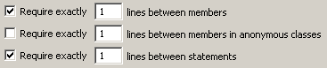
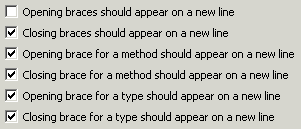
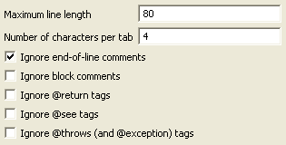
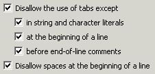

Audit - Rules - FormattingDescriptionThis group contains audit rules that check the code for conformance to various formatting conventions. |
| Rules: |
Summary
Blank lines should be used consistently to improve readability.
Description
This audit rule checks for places where the number of blank lines used between program elements is not consistent.
Example
If the rule has been configured to expect two blank lines between members in a type, then the following field declarations will be flagged because there is only one blank line between them:
private int x;
private int y;

Summary
Opening and closing braces should be positioned properly.
Description
This audit rule finds opening and closing braces that are incorrectly positioned. By default, opening braces should not appear on a new line and closing braces should appear on a new line. Opening braces for methods and types should appear on a new line.
Example
With the default settings, the opening brace for the following method and the opening brace for the if statement within it would both be flagged as violations:
public int getLength(Object[] array) {
if (array == null)
{
return 0;
}
return array.length;
}

Summary
Code within blocks should be indented one level more than the block.
Description
This audit rule checks for blocks of code that are not indented one level more than the code containing the block.
Example
The statements inside the following if statement would be flagged as needing to be indented:
if (employee.isHourly()) {
computeHourlyBonus(employee);
} else {
computeSalariedBonus(employee);
}
Summary
Lines should not be too long.
Description
This audit rule checks for lines that are longer than a specified number of characters. By default, each tab character is counted as four spaces.
Example
If the rule were configured to allow lines of up to 120 character and a line were found that contained 253 characters, that line would be flagged as a violation.

Summary
Each statement should be on its own line.
Description
This audit rule checks for statements that occur on the same line as a previous statement and flags them.
Example
The second assignment statement would be flagged as needing to be on its own line:
x = 0; y = 0;
Summary
Casts should be followed by white space.
Description
This audit rule checks for uses of type casts to ensure that there is at least one space after the type.
Example
The following cast expression would be flagged as a violation because there is no space between the type and the expression:
value = (String)table.get(key);
Summary
Commas should be followed by white space.
Description
This audit rule checks for uses of commas to ensure that there is a space after the comma, but no space before the comma.
Example
The following method invocation would be flagged twice as a violation, once for the extra space before the first comma, and again for the missing space after the second comma:
merge(result , left,right);
Summary
Binary operators should be surrounded by white space.
Description
This audit rule checks for uses of binary operators in which there is no white space on either the left or right side of the operator.
If checked, the "Ignore prefix operators" option causes the audit rule to ignore prefix operators when checking for whitespace violations (e.g. do not flag the expression "(-i)" as a violation).
The "Ignore postfix operators" option is similar (e.g. do not flag the expressions "(i++)" or i++; as violations).
Example
The following arithmetic expression would be flagged twice as a violation, once for the missing space before the operator and again for the missing space after the operator:
index+1
Summary
Periods should not be surrounded by white space.
Description
This audit rule checks for uses of periods (within qualified names) in which there is white space on either the left or right side of the period.
Example
The following method invocation would be flagged twice as a violation, once for the space before the period and again for the space after the period:
point . getX()
Summary
Indentation should consistently be done using either tabs or spaces.
Description
Indentation should either be done using tabs, or it should be done using spaces, but should not be done using a combination of the two. This audit rule allows you to specify the indentation style you prefer, and then looks for places where space and tab characters are used in ways that violate the specified criteria.
